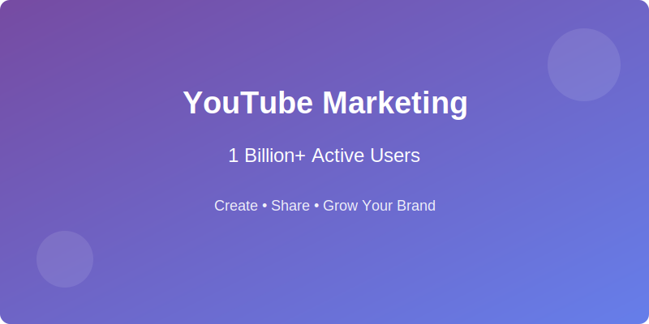
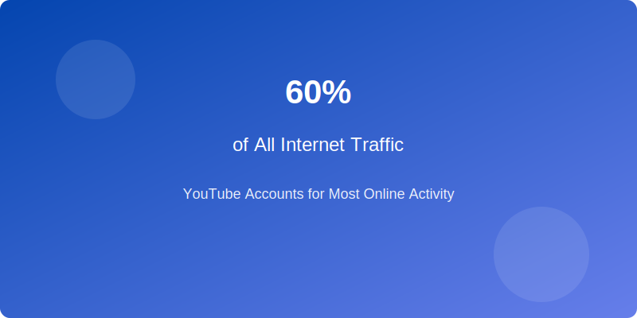
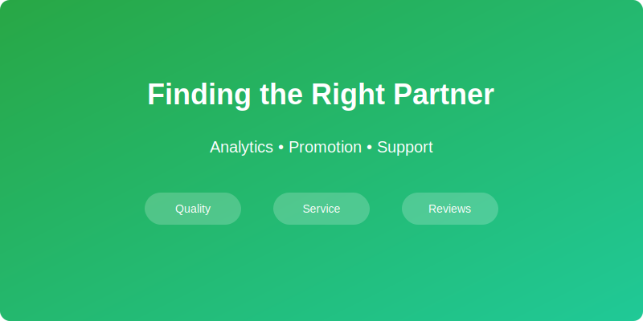

YouTube is currently the second largest search engine in the world behind Google. In fact, according to Statista, there were over 1.8 billion searches performed using YouTube in 2017. This makes YouTube an important tool for any company looking to connect with its customers or potential customers.
The great thing about
YouTube is that it allows companies to create their own channel where they can upload videos and share them directly with their target audience. YouTubers have proven time and again that people trust what they see from other YouTubers more than they trust what they read in traditional media.
What is YouTube marketing?

YouTube has become one of the most popular platforms for online video content, and it's no wonder why. There are over a billion users on this platform alone, and that number continues to grow every day. If you want your videos to be seen by as many people as possible, then YouTube may be the right fit for your business.
Why is YouTube Marketing Important?

YouTube is already massive. And it'll get even bigger by the day. According to Business Insider, YouTube now accounts for around 60% of all internet traffic. That means if you want your videos to reach the widest possible audience, you need to make sure they appear on YouTube.
How do identify the ideal YouTube Marketing company?

The best companies for YouTube marketing will give you the tools you need to create engaging videos and promote them across multiple social media platforms. They will also help you with analytics so you can measure how well your videos perform. You can find these services in any major city or town, but if you live in an area where there isn't much competition, you might have more luck finding the best company for YouTube marketing than someone who lives in a crowded market.
The first step towards getting started with YouTube advertising is deciding what type of ads you would like to run. Some businesses choose banner ads while others opt for text-based ads such as "Sponsored" or "Promoted." These types of ads usually appear at the top or bottom of the page, depending on which option you select.
Once you decide which type of ad works best for your business, you will need to make sure that you target the right audience. The best way to do this is through
demographics. This means targeting your ads based on age, gender, location, interests, and other factors.
Once you know who you are going after, you will need to figure out what they care about. To do this, you will need to look into their behavior and habits. Do they watch certain shows or movies? Do they spend time reading news articles? All of these things are important because they tell you what topics are relevant to your potential customers.
After you determine what your audience cares about, you will need to start creating content around those topics. Create videos, write blogs, and post images and infographics. Make sure that all of your posts include links back to your website so that your viewers can learn more about your products or services, If you are YouTuber, then this is the right place to add your Video snippets to get more views from your target audience.
After you have created some great content, you will need to promote it. Promoting your content doesn't necessarily mean spending money on advertisements. Instead, you should use social media sites such as
Facebook, Twitter, Instagram, LinkedIn, and so on. Each of these websites allows you to share your content with your followers and allow them to interact with your brand.
When it comes to choosing a company for YouTube marketing, you don't want to just pick anyone. You want to make sure that the company you hire offers high quality service and support. In such scenario
LenosTube, becomes handy! They provide the best service and trustable site to land your YouTube Marketing. It's not uncommon for companies to offer poor customer service when it comes to promoting their videos on YouTube. Don't let this happen to you! When you are looking for a company for YouTube marketing services, make sure that you ask lots of questions and read reviews from previous clients, in this scenario, Lenos is having a excellent customer support, which serves best for their clients.
Our Verdict
YouTube is an online platform that allows users to upload videos and share them with other users. Users can also comment on each other's videos. The goal of YouTube is to provide a free service that enables individuals to create, edit, and publish original multimedia content. YouTube became popular because its user base grew rapidly, and many well-known YouTubers started out there. There are billions of views per month, making it one of the largest websites on Earth. However, not all YouTubers succeed at growing their channels. Some fail to gain traction because they lack a strong following, while others struggle to maintain consistency. To become successful, you need to understand the strategies that work best for you and your audience. You'll also need to stay true to your brand and avoid negative comments. Adhere to the principles mentioned above, and watch your channel grow!